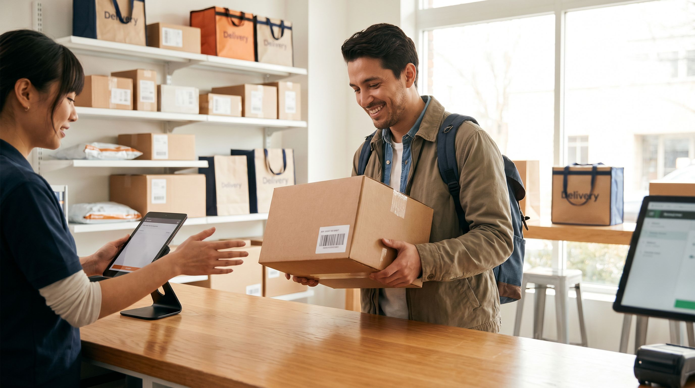

Valget af leveringsform er ikke ligegyldigt for din bundlinje. Pakkeshop er billigere end hjemlevering. Det ved de fleste webshop-ejere. Men faaerre ved praecis hvor stor forskellen er, hvad den betyder for det samlede fragtbudget, og hvad der rent faktisk driver kundens valg i checkout.
Denne artikel gennemgaar, hvad data siger om danske kunders praeferencer, hvad de to leveringsformer koster dig, og hvordan du praesenter dem i checkout saa du maximerer baade konvertering og margin.
👉 SmartPack giver dig fuldt overblik over forsendelsesomkostninger fordelt paa leveringsform. Laer mere
Hvad vaelger danske kunder
Naar begge leveringsformer er tilgaengelige og pakkeshop er billigst, vaelger 60-70% af danske netkoebere pakkeshop. Det er den dominerende tendens paa tvaers af kategorier og aldersgrupper. Men der er nuancer:
- Tunge og uhaaandterlige pakker faar kunder til at vaelge hjemlevering selvom det koster mere. Ingen vil slaebt en 15 kilo maskine fra pakkeshopen.
- Premiumkategorier som smykker, vin og luksusvarer ser hoejere hjemleverings-andel. Kunden oplever det som en del af servicen.
- Unge byboere under 35 er storsaet pakkeshop-praefererende. De er til hverdag i naerheden af en pakkeshop og finder det bekvemt.
- Aaeldre kunder og kunder i landdistrikter vaelger oftere hjemlevering naer afstanden til naermeste pakkeshop er over 2 km.
Det strategiske svar er ikke at vaelge den ene over den anden. Det er at tilbyde begge og lade kunden beslutte. Webshops der kun tilbyder een leveringsform mister konvertering fra den halvdel af kundebasen, der foretraekker den anden.
Hvad de to former koster din virksomhed
| Leveringsform | Typisk fragttakst | Fordele | Ulemper |
|---|---|---|---|
| Pakkeshop | 28-45 kr. | Lavere pris, foerst-forsog-succesrate hoj | Ikke for store/tunge pakker |
| Hjemlevering | 45-80 kr. | Bekvem for kunden, oeger tilfredshed ved premium | Dyrere, hoejere fejlrate ved ingen-hjemme |
Hvis du i dag sender 60% af dine ordrer som pakkeshop og 40% som hjemlevering, og din gennemsnitlige volumen er 1.000 ordrer om maaneden, sparer du 15.000-20.000 kr./maaned sammenlignet med at sende alt som hjemlevering. Det er penge der gaar direkte i lommen.
Fejlleveringer og foerst-forsog-succesrate
Et ofte overset argument for pakkeshop: foerst-forsog-succesraten er markant hoejere. Ved hjemlevering er kunden ikke altid hjemme. Fragtfirmaet proever igen, kunden faar en besked, pakken havner maaskle paa depot. Hvert mislykket leveringsforsog koster tid og penge. Ved pakkeshop afhenter kunden naer det passer dem. Der er naesten ingen spildt leveringsforsog.
Ser du mange kundehenvendelser om manglende leveringer, er det vaerd at undersoge fordelingen. Hjemleverings-pakker genererer 3-5 gange saa mange "hvor er min pakke?"-supporthenvendelser som pakkeshop-pakker.
Saadan presenterer du leveringsvalget i checkout
Maaden du praesenter dine leveringsvalg i checkout paavirker baade konvertering og hvad kunden vaelger. Her er principper der virker:
- Vis prisen pr. leveringsform tydeligt. Kunder der ser "Pakkeshop: 0 kr. / Hjemlevering: 39 kr." traffer et informeret valg. Kunder der ikke ser prisen, misforstaar ofte og bliver irriterede.
- Fremhaev pakkeshop som standardvalg naer du vil styre mod lavere fragtomkostning. Det er aedskt: kunder der ikke aktivt vaelger, vaelger standarden.
- Vis kortudsnit med naermeste pakkeshops. Kunden der kan se at der er en pakkeshop 200 meter fra sin adresse, er meget mere tilboejelig til at vaelge det. GLS, PostNord og Bring har alle widgets til dette.
- Brug leveringsdato, ikke antal dage. "Leveres tirsdag d. 6. maj" er mere trygt end "2-3 hverdage". Konkrete datoer reducerer usikkerhed og oeger konvertering.
Hvad du skal maale
Tre tal du skal kende om dine leveringsformer:
- Fordeling pakkeshop vs. hjemlevering. Hvad er din nuvaerende split? Hvis mere end 50% vaelger hjemlevering paa ordrer under 500 gr., er der sandsynligvis noget galt med din pris-presentering eller standardvalget.
- Foerst-forsog-succesrate pr. leveringsform. Hvad er andelen af pakker der leveres i foerste forsog? En succesrate under 85% paa hjemlevering er et problem.
- Supportomkostning pr. leveringsform. Hvor mange kundeservice-henvendelser genererer pakkeshop vs. hjemlevering pr. 100 ordrer?